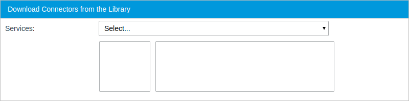
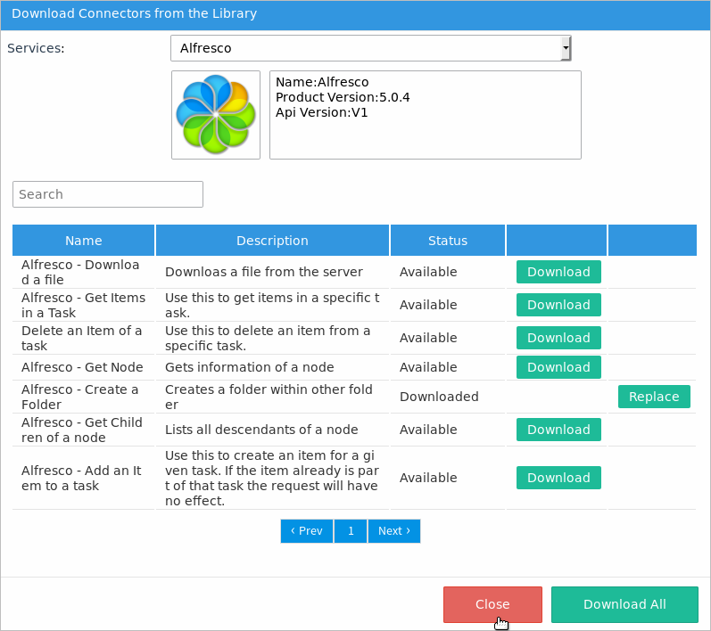
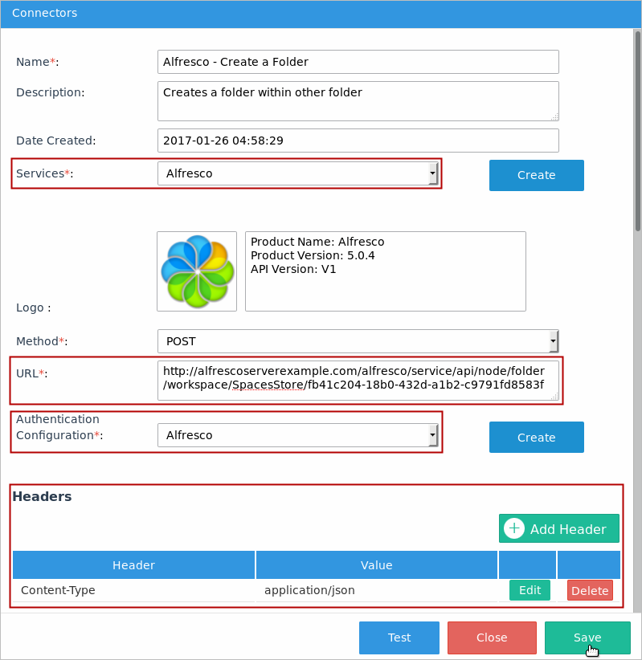
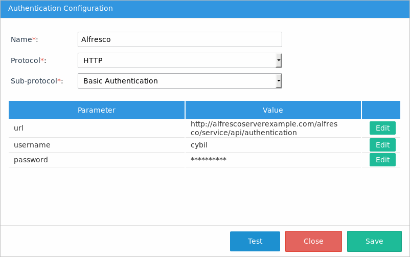
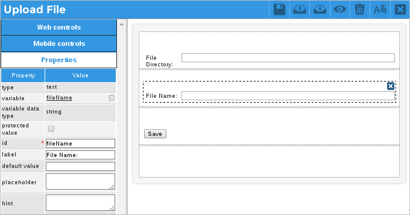
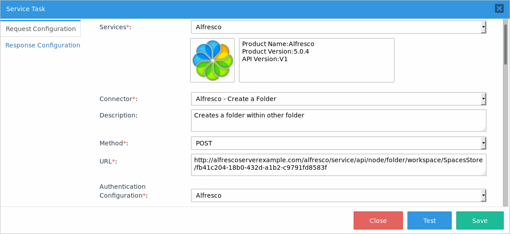
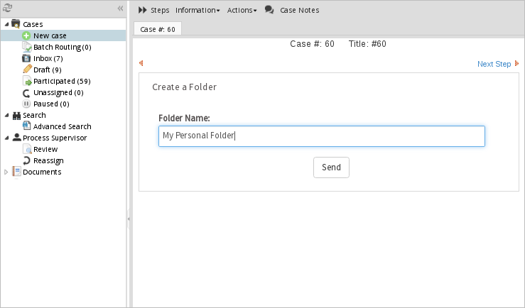
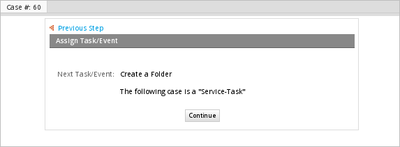
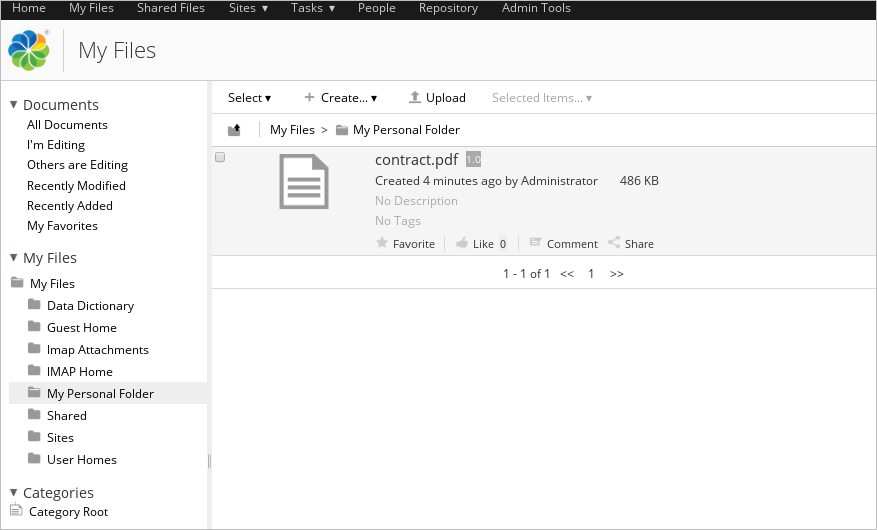

Alfresco Services and Enterprise Connectors
Alfresco is an Enterprise Content Management (ECM), Web Content Management and Digital Image Management tool. It is a content management system that helps boost document sharing, collaboration and more.
ProcessMaker Enterprise Connectors are available for download through the connector public library to work with Alfresco services.
Alfresco Connectors
Take into consideration that each one of these connectors has its own configuration and parameters that must be defined. Therefore, it is recommended to read the Alfresco API documentation.
The following connectors are available for download:
- Get Items of a task: Gets the items in a task.
- Get node: Gets information about a node.
- Get children of a node: Lists all descendants of a node.
- Add item to a task: Creates an item for a given task. If the item is already part of the task, the request will have no effect.
- Delete items from task: Deletes an item from a specific task.
- Create a folder in repository: Creates a folder in a given node.
- Download Document/File: Downloads a file from the server.
- Upload Document/File: Uploads a document/file to a given directory.
Alfresco Example
The following example creates a folder inside the Alfresco server and uploads a file from the ProcessMaker server to the created folder. This example demonstrates the following:
Requirements
Take into account the following requirements to execute an example:
- You must have an Alfresco server defined with a user account. For example:
http://alfrescoserverexample.com.
Configuring Alfresco Connectors
Configure Enterprise Connectors in your ProcessMaker instance to correctly run Alfresco.
Connectors
To configure Enterprise Connectors of Alfresco, follow these steps:
Go to Admin > PM Connectors > Connectors menu.
The Connectors screen displays. At the top right of the screen, click the Download button to download the necessary connectors from the connectors library.
The Download Connectors from the Library screen displays. In the Services drop-down, select Alfresco.

All the available connectors for the Alfresco service display in the same screen. For this example, download the Alfresco - Create a Folder connector by clicking the Download button:

The connector status changes to Downloaded. Next to the Status column, the Replace button displays for each connector. Click Close.

Note: If it is the first time an Alfresco connector is downloaded from the library into the workspace, after downloading all the connectors, the Alfresco authentication configuration, and the Alfresco service automatically download.
The connector is listed. Click Edit to change its settings.

The Connectors screen displays. Modify the following:
In the URL field, modify the blue values with an Alfresco server and the ID of the parent folder.
{server}/alfresco/service/api/node/folder/workspace/SpacesStore/{parentFolderId} For example:
http://alfrescoserverexample.com/alfresco/service/api/node/folder/workspace/SpacesStore/fb41c204-18b0-432d-a1b2-c9791fd8583fIn the Headers section of each connector, add a content type header:
Content-Type: application/jsonEnsure that the Services and the Authentication Configuration field is "Alfresco".
-
Click Save to save the configuration.

For this example, we need to create a new connector named Alfresco - Upload a Folder, which will upload the file to the folder created. For this purpose in the Connectors screen in the top right, click Create.
The Connectors window displays. Set the following parameters:
- In the Name field, enter the name of the connector, which is "Alfresco - Upload a Folder".
- In the Description field, enter a brief description about what the connector does. In this case is "Upload file to a folder"
- In the Services field, select the Alfresco service.
- In the Method field, select POST as the method.
- In the URL field, enter the URL of the Upload resource that is:
http://{alfresco-server}/alfresco/service/api/upload In this example, the URL is:http://alfrescoserverexample.com/alfresco/service/api/upload - In the Authentication Configuration field, select the Alfresco configuration.
- Scroll down the Connectors window, set the Body type to Form and add the following parameters by clicking the Add Form parameter button.
Parameter Description Type filedata The path of the file file destination The folder in the Alfresco server text filename The name of the file that will be uploaded text - In the Author field, enter the author name. In this example "Cybil Bennet".
- Click Save to save the new connector.


Authentication Configuration
After you download the Alfresco - Create a Folder connector, the Alfresco authentication configuration automatically downloads. Alfresco uses the HTTP protocol and the Basic Authentication sub-protocol. However, we need to configure additional parameters. To configure additional parameters, follow the next steps:
Go to Admin > PM Connectors > Authentication Configuration menu.
The Authentication Configuration screen displays. In the Alfresco row, click Edit to see and edit the authentication configuration details.

As you can see, basic authentication uses the user's credentials to access the service's resources. Add the user's name and password in the username and password fields, and the
http://alfresco-server/alfresco/service/api/authentication path in the URL field.Click Save.

Service
After you download the Alfresco - Create a Folder connector, the Alfresco service is automatically downloaded. To see the service details and the Alfresco version with which connectors are connected, follow the next steps:
Go to Admin > PM Connectors > Services menu.
The Services screen displays. In the Alfresco row, click Edit to see the Alfresco service details.
Click Close.

Designing the Process
Design the following elements for the process:
Go to the ProcessMaker Designer and create the following process map.

Create the following variables:
- folder - String
- fileName - String
- filePath - String
- response - String

Create a Dynaform named "Add Parameters", where the user will define the name of the folder that will be created. This Dynaform contains a text control related to the folder variable, as shown in the image below.

Assign the "Add Parameters" Dynaform to the "Get Params" task.

Create a second Dynaform named "Upload File", where the user will fill in the path and the name of the file that will be uploaded to the folder created. This Dynaform contains two text controls related to the filePath and fileName variables as shown in the image below.

Assign the "Upload File" Dynaform to the "Upload Dynaform" task.

-
The "Create a Folder" task is a service task. Right-click it to edit its properties. In the Service Task window that opens, the Request Configuration tab displays. Select the Alfresco service and then select the Alfresco - Create a Folder connector. The Description, Method and URL fields fill in automatically with the connector's configuration. In the Authentication Configuration field, select the Alfresco authentication.

Scroll down the window and fill in the Body field. This connector's JSON body request must include the name of the folder that will be created. Therefore, assign the @@folder variable in the name parameter. This variable contains the name of the folder defined by the user in the first Dynaform.
{
"name": "@@folder"
}
Go to Response Configuration tab. In the Response Variable field, place the @@response variable to store the response of the connector.

Save the service task configuration.
Create a trigger named "GetFolder" with the following code:
$folder = @&response->message->nodeRef;
@@folder = $folder;-
Right-click the Retrieve node script task, and then select Properties. In the Title dropdown, select the "GetFolder" trigger and save the changes.

-
After that, right-click the Upload File service task and then select Properties. The Request Configuration tab displays. In the Service Task window that displays next to the tab, select the "Alfresco" service and then select the "Alfresco - Upload a File" connector. The Description, Method and URL fields fill in automatically. In the Authentication Configuration dropdown, select the Alfresco authentication.

Scroll down until the Body Type field where the "form-data" option selects automatically and the Form Parameters section displays. Add values to the following form parameters:
Form Parameter Type Value filename text @@fileName destination text @@filePath filedata file @@folder 
Go to Response Configuration tab. In the Response Variable field, choose the @@response variable to store the response of the connector.
Save the changes.
Running a Case
After starting a case, the first Dynaform displays to fill in the name of the folder that will be created inside the Alfresco server. In this example, the name is "My Personal Folder". Click Send.

The case routes to the next task, which is a service task that will execute the Alfresco - Create a Folder connector.

The case lists in the Inbox tray of the next assigned user.

Open the case and the second Dynaform displays to fill in the path and name of the file that will be uploaded by the connector. In this example, the connector uploads a file named "contract.pdf" located in the /home/worker/ path.

After submitting the Dynaform, the case routes to the next task, which is the second service task in the process.

The Upload File service task executes and the case completes.
Now log in to your Alfresco server with your account and verify that the folder has been created.

Open the folder and verify that the file has been uploaded, as shown in the image below.
